![]()
library(statnet)
load("par5.RData")
load("par.friends.RData")Part 1 built up an ERGM using terms that assume ties form independently of one another. That assumption made the models easy to fit and easy to interpret, but it was not a great model. We saw that the actual observed advice network had more reciprocated ties and more triangles than an independence model could produce.
This post takes up the terms that can represent those patterns, the estimation problems they bring with them, and how to check whether a fitted model actually reproduces the network you started with.
Dependence among ties
The moment we say that whether \(i\) sends a tie to \(j\) depends on the other ties in the network, we have left logistic regression behind. Two teachers may be more likely to exchange advice because they already share a partner, or because advice tends to be reciprocated. Those are statements about ties conditioning on other ties in the network.
The classic way to capture clustering was a simple triangle term, counting the triangles a tie would close. A positive coefficient would say triangles appear more often than chance would produce. This makes intuitive sense, but, as we will see, it is a pretty reliable way to break your model.
The modern alternative is the geometrically weighted edgewise shared partner statistic, gwesp. Rather than counting each additional shared partner equally, it discounts them: going from zero shared partners to one matters a great deal, from five to six much less. That diminishing return is both substantively sensible and far better behaved during estimation.
mod6 <- ergm(par5 ~ edges + mutual + edgecov(par.friends) +
nodeicov("COMP.1") + nodeocov("COMP.1") +
twopath + gwesp(0.25, fixed = TRUE))Starting maximum pseudolikelihood estimation (MPLE):Obtaining the responsible dyads.Evaluating the predictor and response matrix.Maximizing the pseudolikelihood.Finished MPLE.Starting Monte Carlo maximum likelihood estimation (MCMLE):Iteration 1 of at most 60:1 Optimizing with step length 1.0000.
The log-likelihood improved by 0.8755.
Estimating equations are not within tolerance region.
Iteration 2 of at most 60:
1 Optimizing with step length 1.0000.
The log-likelihood improved by 0.1078.
Estimating equations are not within tolerance region.
Iteration 3 of at most 60:
1 Optimizing with step length 1.0000.
The log-likelihood improved by 0.0175.
Convergence test p-value: 0.4831. Not converged with 99% confidence; increasing sample size.
Iteration 4 of at most 60:
1 Optimizing with step length 1.0000.
The log-likelihood improved by 0.0202.
Convergence test p-value: 0.0284. Not converged with 99% confidence; increasing sample size.
Iteration 5 of at most 60:
1 Optimizing with step length 1.0000.
The log-likelihood improved by 0.0308.
Convergence test p-value: 0.0923. Not converged with 99% confidence; increasing sample size.
Iteration 6 of at most 60:
1 Optimizing with step length 1.0000.
The log-likelihood improved by 0.0213.
Convergence test p-value: 0.0221. Not converged with 99% confidence; increasing sample size.
Iteration 7 of at most 60:
1 Optimizing with step length 1.0000.
The log-likelihood improved by 0.0187.
Convergence test p-value: 0.0643. Not converged with 99% confidence; increasing sample size.
Iteration 8 of at most 60:
1 Optimizing with step length 1.0000.
The log-likelihood improved by 0.0091.
Convergence test p-value: 0.0082. Converged with 99% confidence.
Finished MCMLE.
Evaluating log-likelihood at the estimate. Fitting the dyad-independent submodel...
Bridging between the dyad-independent submodel and the full model...
Setting up bridge sampling...
Using 16 bridges: 1 2 3 4 5 6 7 8 9 10 11 12 13 14 15 16 .
Bridging finished.
This model was fit using MCMC. To examine model diagnostics and check
for degeneracy, use the mcmc.diagnostics() function.summary(mod6)Call:
ergm(formula = par5 ~ edges + mutual + edgecov(par.friends) +
nodeicov("COMP.1") + nodeocov("COMP.1") + twopath + gwesp(0.25,
fixed = TRUE))
Monte Carlo Maximum Likelihood Results:
Estimate Std. Error MCMC % z value Pr(>|z|)
edges -2.28793 0.81674 0 -2.801 0.005090 **
mutual 2.14409 0.51004 0 4.204 < 1e-04 ***
edgecov.par.friends 2.24828 0.38423 0 5.851 < 1e-04 ***
nodeicov.COMP.1 -0.06056 0.16962 0 -0.357 0.721067
nodeocov.COMP.1 -0.54143 0.16012 0 -3.381 0.000721 ***
twopath -0.25913 0.09208 0 -2.814 0.004891 **
gwesp.OTP.fixed.0.25 0.64993 0.26044 0 2.495 0.012578 *
---
Signif. codes: 0 '***' 0.001 '**' 0.01 '*' 0.05 '.' 0.1 ' ' 1
Null Deviance: 424.2 on 306 degrees of freedom
Residual Deviance: 213.9 on 299 degrees of freedom
AIC: 227.9 BIC: 254 (Smaller is better. MC Std. Err. = 0.6388)The decay parameter — 0.25 here — controls how quickly additional shared partners are discounted. Setting fixed = TRUE treats it as known rather than estimating it, which is the common practice though you can also allow for it to be estimated as well. For more information see Hunter and Handcock (2006) as well as Hunter (2007)
A full model
Let’s build a full model here. This is the full specification from the published analysis (https://onlinelibrary.wiley.com/doi/abs/10.1111/puar.12362): structural terms for reciprocity, twopaths, edgewise and dyadwise shared partners, and in- and out-degree distributions, alongside the attribute and friendship effects from Part 1.
final <- ergm(par5 ~ edges + mutual + twopath +
gwesp(0.693, fixed = TRUE) + gwdsp(0.693, fixed = TRUE) +
edgecov(par.friends) +
gwidegree(0.693, fixed = TRUE) + gwodegree(0.693, fixed = TRUE) +
nodematch("GRADE") + absdiff("YRSDIST") +
nodeicov("YRSDIST") + nodeocov("YRSDIST") +
nodeifactor("EDUC") + nodeofactor("EDUC") +
nodeicov("EFFIC") + nodeocov("EFFIC") +
nodeicov("COMP.1") + nodeocov("COMP.1"))Starting maximum pseudolikelihood estimation (MPLE):Obtaining the responsible dyads.Evaluating the predictor and response matrix.Maximizing the pseudolikelihood.Finished MPLE.Starting Monte Carlo maximum likelihood estimation (MCMLE):Iteration 1 of at most 60:1 Optimizing with step length 0.4073.
The log-likelihood improved by 3.4109.
Estimating equations are not within tolerance region.
Iteration 2 of at most 60:
1 Optimizing with step length 0.7604.
The log-likelihood improved by 1.7725.
Estimating equations are not within tolerance region.
Iteration 3 of at most 60:
1 Optimizing with step length 1.0000.
The log-likelihood improved by 0.8978.
Estimating equations are not within tolerance region.
Iteration 4 of at most 60:
1 Optimizing with step length 1.0000.
The log-likelihood improved by 0.2083.
Estimating equations are not within tolerance region.
Iteration 5 of at most 60:
1 Optimizing with step length 1.0000.
The log-likelihood improved by 0.2744.
Estimating equations are not within tolerance region.
Iteration 6 of at most 60:
1 Optimizing with step length 1.0000.
The log-likelihood improved by 0.6561.
Estimating equations are not within tolerance region.
Estimating equations did not move closer to tolerance region more than 1 time(s) in 4 steps; increasing sample size.
Iteration 7 of at most 60:
1 Optimizing with step length 1.0000.
The log-likelihood improved by 1.0698.
Estimating equations are not within tolerance region.
Iteration 8 of at most 60:
1 Optimizing with step length 1.0000.
The log-likelihood improved by 0.1814.
Estimating equations are not within tolerance region.
Iteration 9 of at most 60:
1 Optimizing with step length 1.0000.
The log-likelihood improved by 0.2047.
Estimating equations are not within tolerance region.
Iteration 10 of at most 60:
1 Optimizing with step length 1.0000.
The log-likelihood improved by 0.3366.
Estimating equations are not within tolerance region.
Estimating equations did not move closer to tolerance region more than 1 time(s) in 4 steps; increasing sample size.
Iteration 11 of at most 60:
1 Optimizing with step length 1.0000.
The log-likelihood improved by 0.3336.
Estimating equations are not within tolerance region.
Iteration 12 of at most 60:
1 Optimizing with step length 1.0000.
The log-likelihood improved by 0.2416.
Estimating equations are not within tolerance region.
Iteration 13 of at most 60:
1 Optimizing with step length 1.0000.
The log-likelihood improved by 0.0898.
Convergence test p-value: 0.8026. Not converged with 99% confidence; increasing sample size.
Iteration 14 of at most 60:
1 Optimizing with step length 1.0000.
The log-likelihood improved by 0.0453.
Convergence test p-value: 0.4277. Not converged with 99% confidence; increasing sample size.
Iteration 15 of at most 60:
1 Optimizing with step length 1.0000.
The log-likelihood improved by 0.0381.
Convergence test p-value: 0.0303. Not converged with 99% confidence; increasing sample size.
Iteration 16 of at most 60:
1 Optimizing with step length 1.0000.
The log-likelihood improved by 0.0223.
Convergence test p-value: 0.0024. Converged with 99% confidence.
Finished MCMLE.
Evaluating log-likelihood at the estimate. Fitting the dyad-independent submodel...
Bridging between the dyad-independent submodel and the full model...
Setting up bridge sampling...
Using 16 bridges: 1 2 3 4 5 6 7 8 9 10 11 12 13 14 15 16 .
Bridging finished.
This model was fit using MCMC. To examine model diagnostics and check
for degeneracy, use the mcmc.diagnostics() function.summary(final)Call:
ergm(formula = par5 ~ edges + mutual + twopath + gwesp(0.693,
fixed = TRUE) + gwdsp(0.693, fixed = TRUE) + edgecov(par.friends) +
gwidegree(0.693, fixed = TRUE) + gwodegree(0.693, fixed = TRUE) +
nodematch("GRADE") + absdiff("YRSDIST") + nodeicov("YRSDIST") +
nodeocov("YRSDIST") + nodeifactor("EDUC") + nodeofactor("EDUC") +
nodeicov("EFFIC") + nodeocov("EFFIC") + nodeicov("COMP.1") +
nodeocov("COMP.1"))
Monte Carlo Maximum Likelihood Results:
Estimate Std. Error MCMC % z value Pr(>|z|)
edges -0.19714 1.25398 0 -0.157 0.875077
mutual 2.36246 0.69833 0 3.383 0.000717 ***
twopath -0.40063 0.16783 0 -2.387 0.016980 *
gwesp.OTP.fixed.0.693 0.48083 0.22800 0 2.109 0.034956 *
gwdsp.OTP.fixed.0.693 -0.13018 0.18990 0 -0.685 0.493032
edgecov.par.friends 2.32405 0.46586 0 4.989 < 1e-04 ***
gwideg.fixed.0.693 2.12301 1.93748 0 1.096 0.273184
gwodeg.fixed.0.693 -0.64405 1.14219 0 -0.564 0.572841
nodematch.GRADE 0.86421 0.38433 0 2.249 0.024537 *
absdiff.YRSDIST -0.01276 0.01744 0 -0.732 0.464454
nodeicov.YRSDIST -0.01959 0.02252 0 -0.870 0.384348
nodeocov.YRSDIST 0.01477 0.01940 0 0.761 0.446433
nodeifactor.EDUC.2 0.04121 0.43939 0 0.094 0.925271
nodeofactor.EDUC.2 -0.02443 0.37485 0 -0.065 0.948029
nodeicov.EFFIC -0.75548 0.30676 0 -2.463 0.013785 *
nodeocov.EFFIC -0.67226 0.28272 0 -2.378 0.017413 *
nodeicov.COMP.1 -0.63553 0.29348 0 -2.166 0.030349 *
nodeocov.COMP.1 -0.60807 0.25823 0 -2.355 0.018536 *
---
Signif. codes: 0 '***' 0.001 '**' 0.01 '*' 0.05 '.' 0.1 ' ' 1
Null Deviance: 424.2 on 306 degrees of freedom
Residual Deviance: 184.3 on 288 degrees of freedom
AIC: 220.3 BIC: 287.4 (Smaller is better. MC Std. Err. = 0.5319)The gwidegree and gwodegree terms deserve a word of caution, because their signs read backwards from what people expect. A negative coefficient indicates centralization — degree concentrated among fewer actors — rather than the opposite. Reading these the wrong way is a common error. Here is a great explainer by Levy and colleagues along with a link to an awesome shiny app to see this in action.
Degeneracy
Let’s move on to what happens when our model fails to converge and thus is degenerate. Model degeneracy means the fitted parameters imply a distribution that places nearly all its probability on networks that look nothing like the one we observed.
The triangle term is a well known problem as an ergm term for producing degenerate models. We will use a simulated high school friendship network that comes with the statnet package for demonstration purposes.
data("faux.magnolia.high")
magnolia <- faux.magnolia.high
plot(magnolia, vertex.cex = 0.75)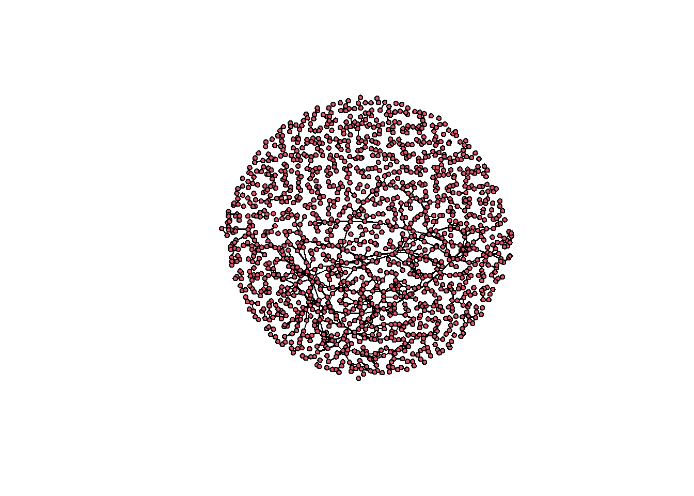
Now try to fit a model with an edges term and a triangle term:
fit <- ergm(magnolia ~ edges + triangle,
control = control.ergm(seed = 1))Starting maximum pseudolikelihood estimation (MPLE):Obtaining the responsible dyads.Evaluating the predictor and response matrix.Maximizing the pseudolikelihood.Finished MPLE.Starting Monte Carlo maximum likelihood estimation (MCMLE):Iteration 1 of at most 60:Error in `ergm.MCMLE()`:
! Number of edges in a simulated network exceeds that in the observed by a factor of more than 20. This is a strong indicator of model degeneracy or a very poor starting parameter configuration. If you are reasonably certain that neither of these is the case, increase the MCMLE.density.guard control.ergm() parameter.The estimation fails. Notice that it does not return a poorly fitting model. Rather, it returns nothing at all, which means there is no fitted object to run diagnostics on. The failure happens upstream of anything we could inspect. And because of this, we will need to build a poor model ourselves.
Watching it fail
To see what is going wrong, we can turn the problem around. Instead of asking which coefficients best fit the data, we will pick coefficients ourselves and ask what networks they imply.
Let’s choose a modest positive triangle coefficient. From this, we will generate a chain of networks from it:
sim.chain <- simulate(magnolia ~ edges + triangle,
coef = c(-3, 0.5),
nsim = 500,
output = "stats")Sampling ■■■■■■■■■■■■■ 39% | ETA: 6sSampling ■■■■■■■■■■■■■■■■ 51% | ETA: 6sSampling ■■■■■■■■■■■■■■■■■■■ 60% | ETA: 6sSampling ■■■■■■■■■■■■■■■■■■■■■ 67% | ETA: 6sSampling ■■■■■■■■■■■■■■■■■■■■■■■ 72% | ETA: 6sSampling ■■■■■■■■■■■■■■■■■■■■■■■■ 77% | ETA: 6sSampling ■■■■■■■■■■■■■■■■■■■■■■■■■■ 82% | ETA: 5sSampling ■■■■■■■■■■■■■■■■■■■■■■■■■■■ 86% | ETA: 4sSampling ■■■■■■■■■■■■■■■■■■■■■■■■■■■■ 89% | ETA: 3sSampling ■■■■■■■■■■■■■■■■■■■■■■■■■■■■■ 93% | ETA: 2sSampling ■■■■■■■■■■■■■■■■■■■■■■■■■■■■■■ 96% | ETA: 1sSampling ■■■■■■■■■■■■■■■■■■■■■■■■■■■■■■■ 99% | ETA: 0sEach row is one network drawn from the model. Plotting the edge count across the chain, with the observed value marked in red:
plot(sim.chain[, "edges"], type = "l",
xlab = "Simulation", ylab = "Edges",
main = "Edge count across simulated networks")
abline(h = summary(magnolia ~ edges), col = "red", lwd = 2)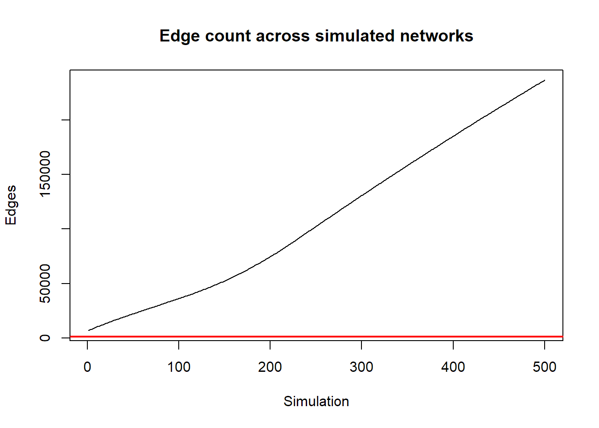
And the triangle count:
plot(sim.chain[, "triangle"], type = "l",
xlab = "Simulation", ylab = "Triangles",
main = "Triangle count across simulated networks")
abline(h = summary(magnolia ~ triangle), col = "red", lwd = 2)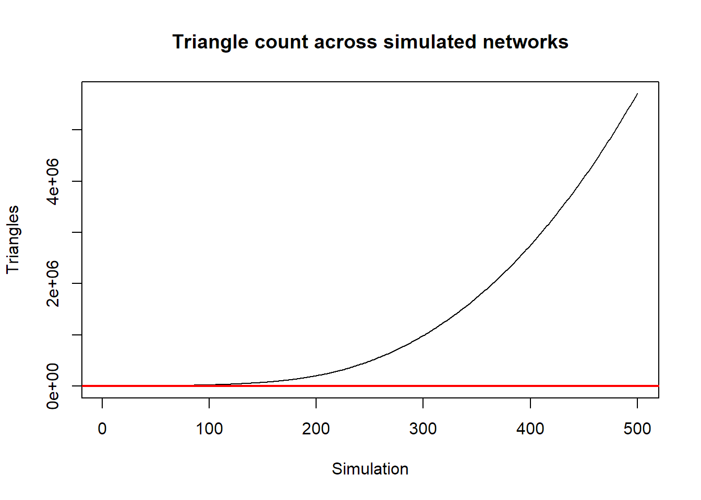
This is degeneracy made visible. The chain does not settle anywhere near the observed network. Here the red line is the observed number of edges and triangles. In both plots, the simulated network statistics for edges and triangles climbs, and keeps climbing, toward networks far denser than anything in the data. A model whose simulated networks look like this cannot possibly be fit to the observed one, because there is no region of the parameter space where the observed network sits near the middle of the model’s own distribution.
Compare the magnitudes directly:
summary(magnolia ~ edges + triangle) edges triangle
974 169 colMeans(sim.chain) edges triangle
109728.5 1311768.2 Why the triangle term does this
The mechanism of why this is happening is worth understanding, because it explains why this problem is specific to terms like triangle rather than a general failing of ERGMs.
Every tie that closes a triangle makes additional triangles more likely, which makes additional ties more likely, which closes more triangles. The statistic feeds back on itself with nothing to dampen it. Adding the hundredth shared partner counts exactly as much as adding the first, so the model has no way to express “clustering is good, but in moderation.”
The fix
The fix is not a better optimizer or a longer chain. It is a better specification.
Two changes we can make to our specification. First, replace triangle with gwesp, whose geometric discounting means each additional shared partner contributes less than the one before. This is precisely the dampening the raw triangle count lacks. Second, give the model attribute terms that account for clustering the structural term was otherwise being asked to absorb on its own.
fit2 <- ergm(magnolia ~ edges + gwesp(0.25, fixed = TRUE) +
nodematch("Grade") + nodematch("Race") + nodematch("Sex"),
control = control.ergm(seed = 1,
MCMC.samplesize = 50000,
MCMC.interval = 1000))Starting maximum pseudolikelihood estimation (MPLE):Obtaining the responsible dyads.Evaluating the predictor and response matrix.Maximizing the pseudolikelihood.Finished MPLE.Starting Monte Carlo maximum likelihood estimation (MCMLE):Iteration 1 of at most 60:Sampling ■■ 2% | ETA: 1mSampling ■■■ 8% | ETA: 49sSampling ■■■■■■■ 19% | ETA: 30sSampling ■■■■■■■■■■ 31% | ETA: 23sSampling ■■■■■■■■■■■■■■ 42% | ETA: 18sSampling ■■■■■■■■■■■■■■■■ 51% | ETA: 16sSampling ■■■■■■■■■■■■■■■■■■■ 60% | ETA: 13sSampling ■■■■■■■■■■■■■■■■■■■■■■ 69% | ETA: 10sSampling ■■■■■■■■■■■■■■■■■■■■■■■■■ 78% | ETA: 7sSampling ■■■■■■■■■■■■■■■■■■■■■■■■■■■ 88% | ETA: 4sSampling ■■■■■■■■■■■■■■■■■■■■■■■■■■■■■■ 97% | ETA: 1s1 Optimizing with step length 0.9550.
The log-likelihood improved by 6.5439.
Estimating equations are not within tolerance region.
Iteration 2 of at most 60:
Sampling ■■■■■■ 16% | ETA: 17s
Sampling ■■■■■■■■■■ 30% | ETA: 15s
Sampling ■■■■■■■■■■■■■■ 43% | ETA: 12s
Sampling ■■■■■■■■■■■■■■■■■■ 57% | ETA: 9s
Sampling ■■■■■■■■■■■■■■■■■■■■■■■ 72% | ETA: 6s
Sampling ■■■■■■■■■■■■■■■■■■■■■■■■■■■ 86% | ETA: 3s
1 Optimizing with step length 1.0000.
The log-likelihood improved by 0.0914.
Convergence test p-value: < 0.0001. Converged with 99% confidence.
Finished MCMLE.
Evaluating log-likelihood at the estimate. Fitting the dyad-independent submodel...
Bridging between the dyad-independent submodel and the full model...
Setting up bridge sampling...
Using 16 bridges: 1 2 3 4 5 6 7 8 9 10 11 12 13 14 15 16 .
Bridging finished.
This model was fit using MCMC. To examine model diagnostics and check
for degeneracy, use the mcmc.diagnostics() function.summary(fit2)Call:
ergm(formula = magnolia ~ edges + gwesp(0.25, fixed = TRUE) +
nodematch("Grade") + nodematch("Race") + nodematch("Sex"),
control = control.ergm(seed = 1, MCMC.samplesize = 50000,
MCMC.interval = 1000))
Monte Carlo Maximum Likelihood Results:
Estimate Std. Error MCMC % z value Pr(>|z|)
edges -9.77798 0.10591 0 -92.32 <1e-04 ***
gwesp.fixed.0.25 1.79703 0.04885 0 36.78 <1e-04 ***
nodematch.Grade 2.74577 0.08583 0 31.99 <1e-04 ***
nodematch.Race 0.91066 0.07363 0 12.37 <1e-04 ***
nodematch.Sex 0.76320 0.06284 0 12.15 <1e-04 ***
---
Signif. codes: 0 '***' 0.001 '**' 0.01 '*' 0.05 '.' 0.1 ' ' 1
Null Deviance: 1478525 on 1066530 degrees of freedom
Residual Deviance: 12134 on 1066525 degrees of freedom
AIC: 12144 BIC: 12203 (Smaller is better. MC Std. Err. = 0.9025)This one estimates. Now we have a fitted object, so we can look at the diagnostics that were unavailable before:
mcmc.diagnostics(fit2)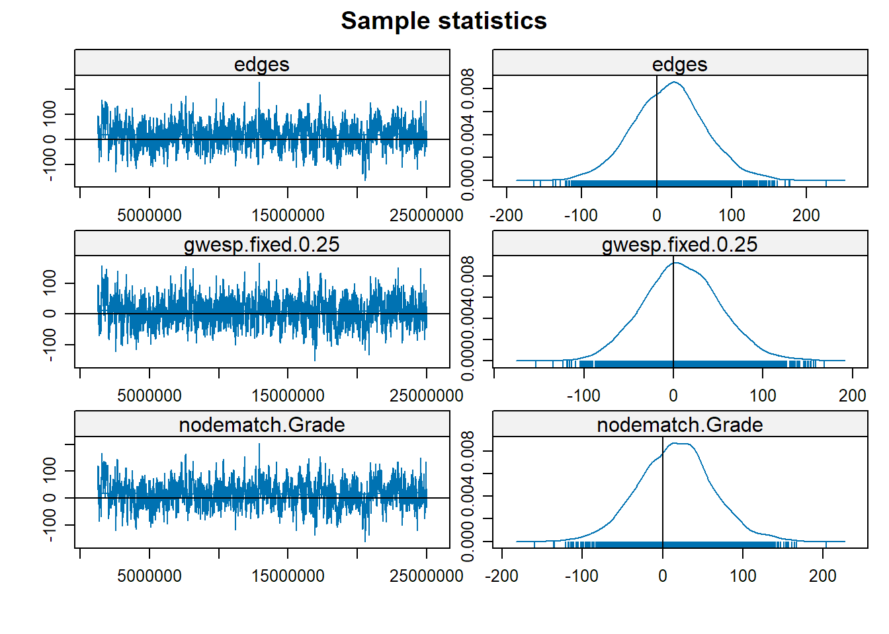
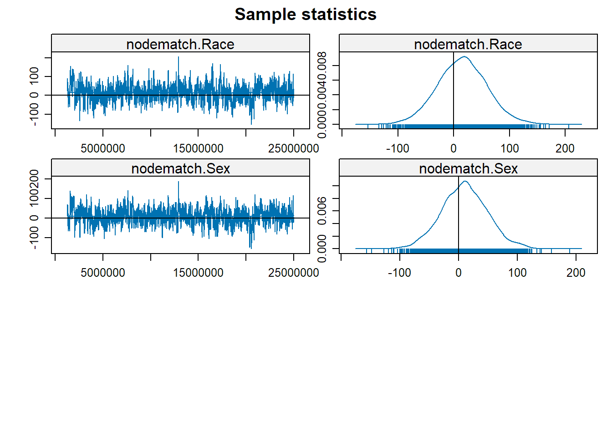
Sample statistics summary:
Iterations = 1250500:24998500
Thinning interval = 6000
Number of chains = 1
Sample size per chain = 3959
1. Empirical mean and standard deviation for each variable,
plus standard error of the mean:
Mean SD Naive SE Time-series SE
edges 16.929 48.30 0.7676 2.541
gwesp.fixed.0.25 9.549 43.42 0.6901 2.097
nodematch.Grade 16.285 46.34 0.7365 2.468
nodematch.Race 15.074 44.46 0.7066 2.568
nodematch.Sex 10.068 39.37 0.6258 2.133
2. Quantiles for each variable:
2.5% 25% 50% 75% 97.5%
edges -78.00 -15.00 17.000 48.00 113.00
gwesp.fixed.0.25 -73.62 -19.99 8.484 38.14 97.08
nodematch.Grade -75.00 -15.00 16.000 45.00 110.05
nodematch.Race -71.00 -14.50 15.000 45.00 104.00
nodematch.Sex -67.00 -16.00 10.000 36.00 91.00
Are sample statistics significantly different from observed?
edges gwesp.fixed.0.25 nodematch.Grade nodematch.Race
diff. 1.692852e+01 9.549270e+00 1.628467e+01 1.507350e+01
test stat. 6.661946e+00 4.553390e+00 6.597000e+00 5.869797e+00
P-val. 2.702247e-11 5.278838e-06 4.195594e-11 4.363289e-09
nodematch.Sex (Omni)
diff. 1.006795e+01 NA
test stat. 4.719416e+00 2.055773e+02
P-val. 2.365226e-06 1.395088e-39
Sample statistics cross-correlations:
edges gwesp.fixed.0.25 nodematch.Grade nodematch.Race
edges 1.0000000 0.8594316 0.9628680 0.9486428
gwesp.fixed.0.25 0.8594316 1.0000000 0.8791839 0.8522083
nodematch.Grade 0.9628680 0.8791839 1.0000000 0.9211032
nodematch.Race 0.9486428 0.8522083 0.9211032 1.0000000
nodematch.Sex 0.9134315 0.8002890 0.8804427 0.8642738
nodematch.Sex
edges 0.9134315
gwesp.fixed.0.25 0.8002890
nodematch.Grade 0.8804427
nodematch.Race 0.8642738
nodematch.Sex 1.0000000
Sample statistics auto-correlation:
Chain 1
edges gwesp.fixed.0.25 nodematch.Grade nodematch.Race
Lag 0 1.0000000 1.0000000 1.0000000 1.0000000
Lag 6000 0.7446390 0.6344405 0.7860461 0.7747297
Lag 12000 0.5966849 0.5285399 0.6376071 0.6426781
Lag 18000 0.4966781 0.4422302 0.5316683 0.5387406
Lag 24000 0.4163834 0.3738939 0.4485239 0.4508404
Lag 30000 0.3650173 0.3280059 0.3811319 0.3936941
nodematch.Sex
Lag 0 1.0000000
Lag 6000 0.7494750
Lag 12000 0.6117679
Lag 18000 0.5142387
Lag 24000 0.4326071
Lag 30000 0.3828866
Sample statistics burn-in diagnostic (Geweke):
Chain 1
Fraction in 1st window = 0.1
Fraction in 2nd window = 0.5
edges gwesp.fixed.0.25 nodematch.Grade nodematch.Race
1.370292 1.607435 1.474975 1.262674
nodematch.Sex
1.255958
Individual P-values (lower = worse):
edges gwesp.fixed.0.25 nodematch.Grade nodematch.Race
0.1705959 0.1079590 0.1402193 0.2067064
nodematch.Sex
0.2091310
Joint P-value (lower = worse): 0.1792526
Note: To save space, only one in every 12 iterations of the MCMC sample
used for estimation was stored for diagnostics. Sample size per chain
was originally around 47508 with thinning interval 500.
Note: MCMC diagnostics shown here are from the last round of
simulation, prior to computation of final parameter estimates.
Because the final estimates are refinements of those used for this
simulation run, these diagnostics may understate model performance.
To directly assess the performance of the final model on in-model
statistics, please use the GOF command: gof(ergmFitObject,
GOF=~model).Read the trace plots on the left first. Each shows the difference between the simulated and observed value of a statistic as the chain progresses. What you want is a stationary band with values bouncing around zero with no trend. The density plots on the right should be roughly symmetric and centered at zero, indicating that simulated networks resemble the observed one on each statistic.
Compare these with the runaway chains we saw above. There the statistics moved quickly away from the observed values and never returned. Here they bounce around them randomly and are always centered on the true value.
This model takes a few minutes to run. Depending on your network’s size and model complexity, some ERGM specifications run for hours or long. Starting a model before bed and hoping to find a converged one in the morning is a reasonable routine.
A point to remember
Notice what actually changed between the model that failed and the model that worked. Students form friendships with others in the same grade, of the same race, of the same sex, and those homophilous ties produce triangles as a byproduct. In our failed model, we asked the triangle term to explain all of that clustering on its own, and so it kept wanting to build more and more triangles and resulted in a degenerate model. Thus you need to think carefully about the processes at work in your network and use the ergm terms that capture those processes in your model.
Degeneracy usually looks like a computational problem and usually is not one. It is the model telling you that your specification is wrong.
Goodness of fit
Convergence is not fit. A model can converge cleanly and still fail to reproduce different features of the network. There are two questions worth asking, and they are different.
First, does the model reproduce the statistics it was fit on?
gof(mod6, GOF = ~ model)
Goodness-of-fit for model statistics
obs min mean max MC p-value
edges 71.000000 58.00000 71.130000 80.00000 0.96
mutual 19.000000 12.00000 18.650000 27.00000 0.96
edgecov.par.friends 63.000000 51.00000 63.140000 72.00000 1.00
nodeicov.COMP.1 33.348969 11.69100 33.344780 58.90952 0.94
nodeocov.COMP.1 -5.223239 -27.23261 -5.232324 16.60461 0.86
twopath 240.000000 141.00000 239.650000 334.00000 1.00
gwesp.OTP.fixed.0.25 63.515073 40.73490 63.068917 85.52174 0.96Second — and more demanding — does it reproduce features it was not fit on?
plot(gof(mod6))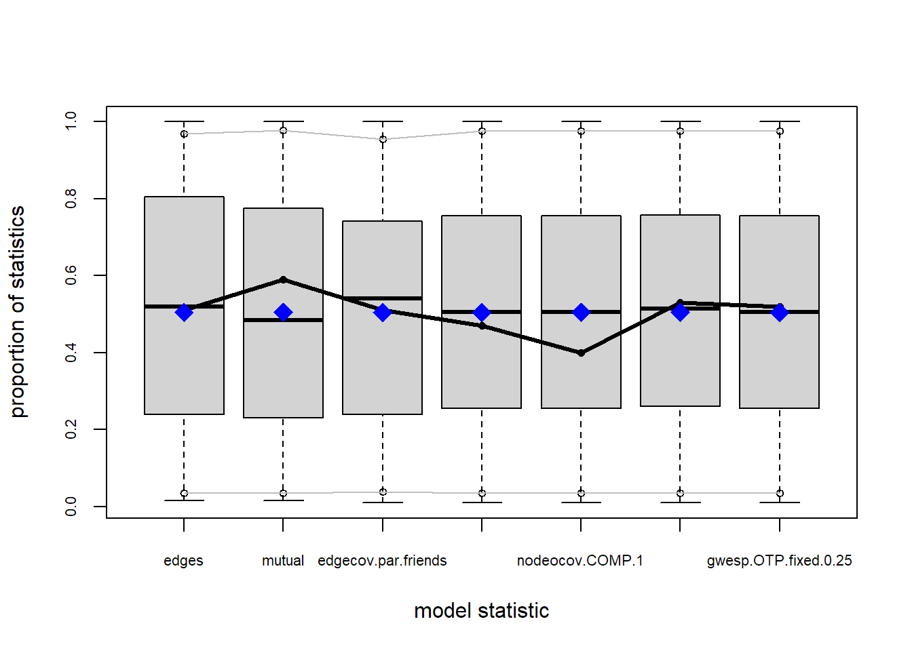
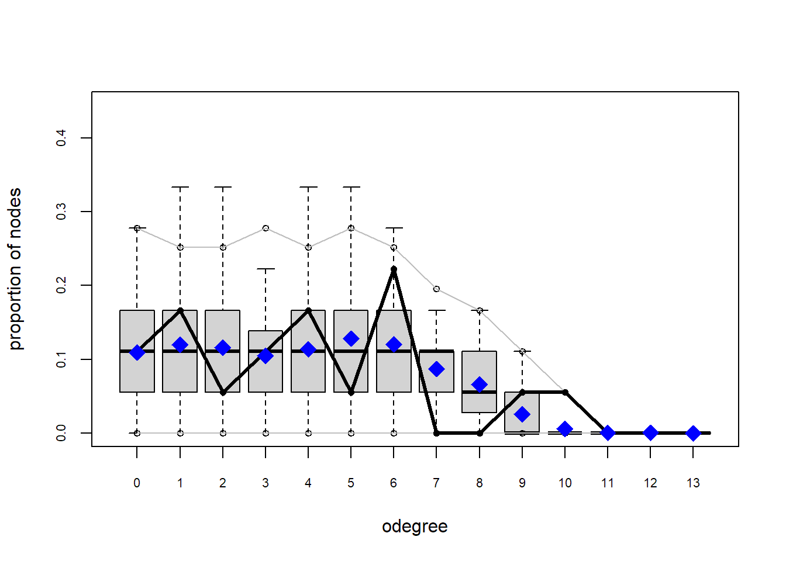
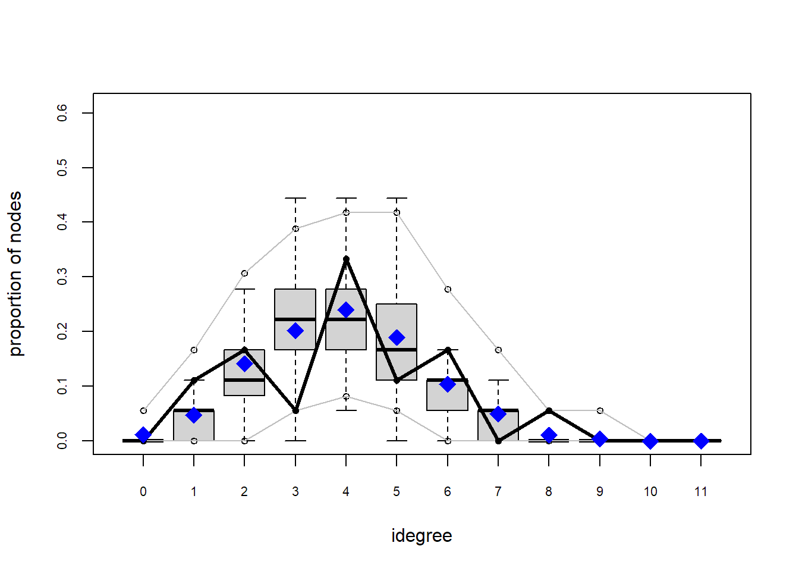
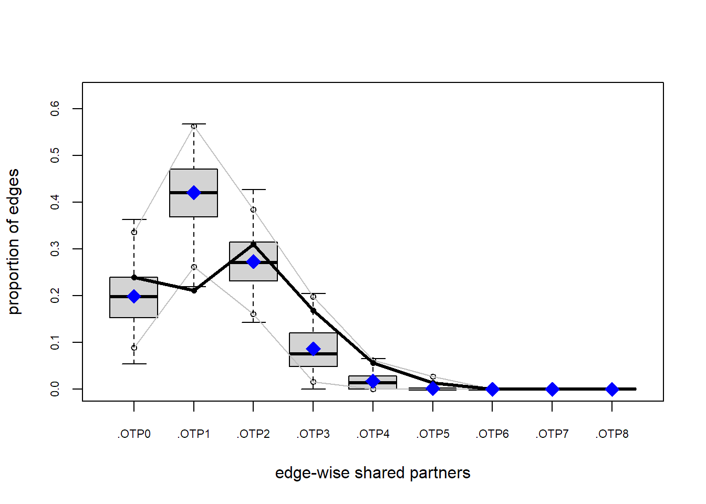
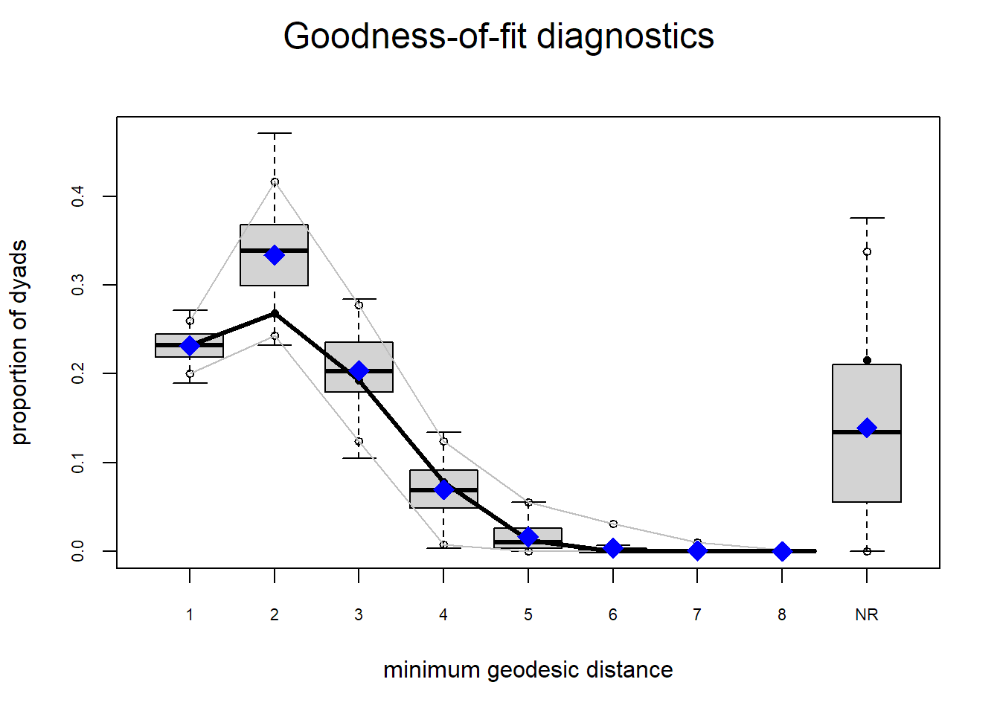
This gives the standard out-of-model comparisons: degree distribution, edgewise shared partners, geodesic distances. In each panel the observed network is the solid line and the simulated distribution is the boxplots. You want the observed line sitting inside the bulk of the simulated range. Where it strays outside, the model is missing something.
You can also name your own statistic, like the triad census, and a model reproducing the full census is capturing local structure well:
plot(gof(mod6 ~ triadcensus))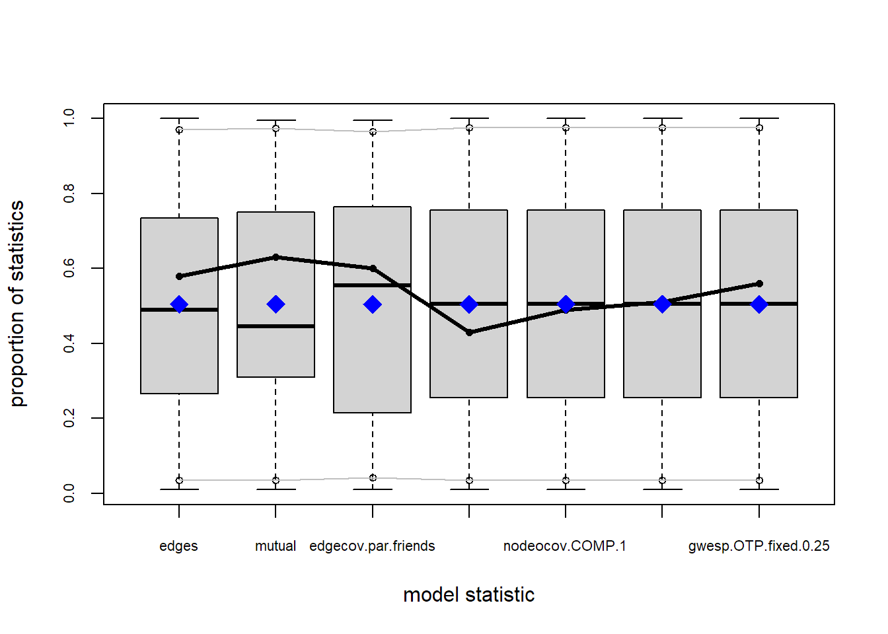
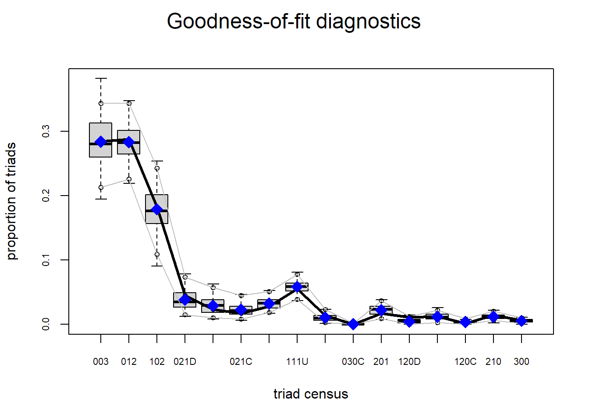
A note on mcmc.diagnostics: since version 3.2 of the estimation algorithm, the diagnostic plots no longer confirm that mean simulated statistics match the observed ones. Use them to assess mixing and convergence, and use gof(GOF = ~model) for the statistics themselves.